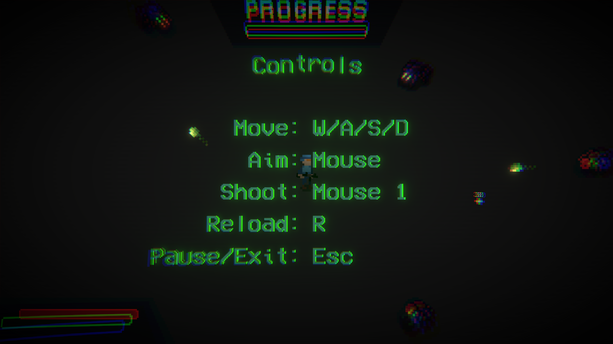
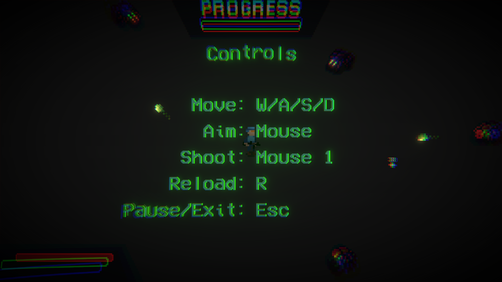

Viridianland
Viridianland is a fast-paced top-down shooter developed as a school project within a span of six weeks. Using Unity as the game engine and programming in C#, I was responsible for implementing all the gameplay mechanics, visual assets, and core systems. The pixel art for the game was created using Aseprite, while the sound design was sourced externally to enhance the overall experience and complement the fast-paced action.
Throughout the development process, I focused on delivering a playable, cohesive game that showcases my ability to handle various aspects of game development within a tight timeframe. The project allowed me to apply and refine my skills in both programming and design, with the goal of creating a fun and engaging experience for players.
Try out Viridianland directly on Itch.io!
 
